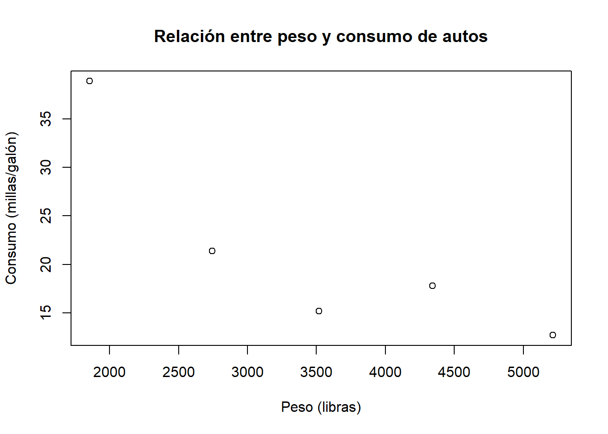
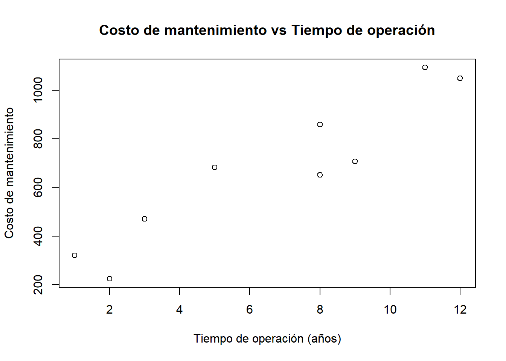
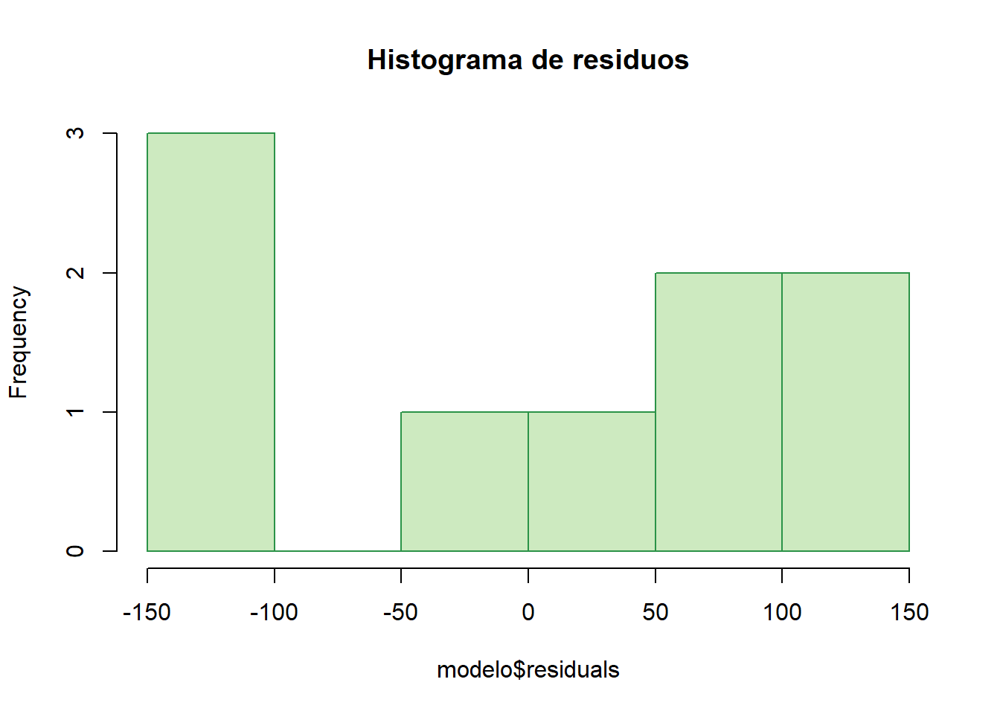
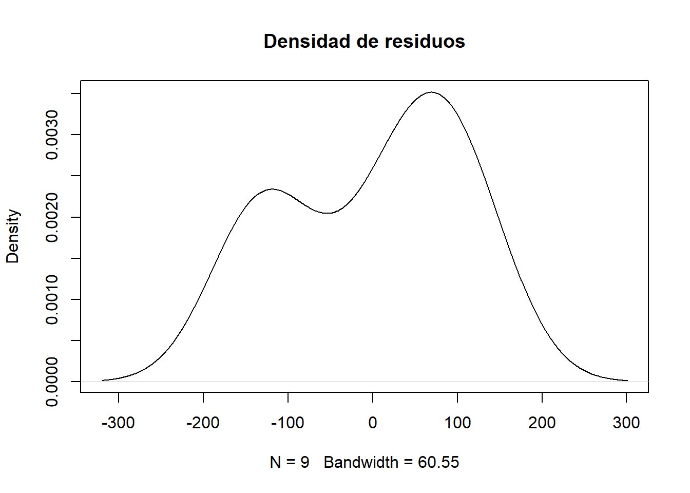

# Ruta absoluta de datos (según tu equipo)
data_path <- "C:/Users/manue/Desktop/lab-econometria/labs/data_epg"
# Verificación
if (!file.exists(file.path(data_path, "auto_peso_consumo.xlsx"))) {
stop("⚠️ No se encontró 'auto_peso_consumo.xlsx' en data_path")
}
if (!file.exists(file.path(data_path, "annos_mantenimiento.xlsx"))) {
stop("⚠️ No se encontró 'annos_mantenimiento.xlsx' en data_path")
}
# Librerías necesarias
# install.packages(c("tidyverse","openxlsx"))
library(tidyverse)
library(openxlsx)Laboratorio 2_epg: Correlación y Regresión Lineal Simple
Econometría para la Gestión — FEN-UAH
Material de apoyo elaborado a partir del texto de Fernando A. Crespo R. (2021) para el curso Econometría para la Gestión — FEN-UAH.
1 Covarianza y Correlación
Hasta ahora hemos visto distribuciones conjuntas, medias y varianzas, las cuales entregan información útil sobre las distribuciones marginales.
Sin embargo, ellas no muestran la relación entre dos variables, es decir, cómo varían juntas.
1.1 Definición: Covarianza
Sean \(X\) y \(Y\) variables aleatorias con distribución conjunta, medias \(\mu_X, \mu_Y\) y varianzas \(\sigma_X^2, \sigma_Y^2\).
La covarianza entre \(X\) y \(Y\) se define como:
\[ \text{Cov}(X, Y) = E[(X - \mu_X)(Y - \mu_Y)] \]
Si \(\sigma_X^2 < \infty\) y \(\sigma_Y^2 < \infty\), la covarianza es finita y puede tomar cualquier valor real.
1.2 Definición: Correlación
Si \(0 < \sigma_X^2 < \infty\) y \(0 < \sigma_Y^2 < \infty\), la correlación de Pearson entre \(X\) y \(Y\) se define como:
\[ \rho(X, Y) = \frac{\text{Cov}(X, Y)}{\sigma_X \sigma_Y} \]
1.3 Teorema 2.1: Desigualdad de Cauchy-Schwarz
Para cualesquiera variables aleatorias \(U\) y \(V\):
\[ [E(UV)]^2 \leq E(U^2) \, E(V^2) \]
De esta desigualdad se deduce que:
\[ -1 \leq \rho(X, Y) \leq 1 \]
1.4 Teorema 2.2
Para variables aleatorias \(X\) y \(Y\) con varianzas finitas:
\[ \text{Cov}(X, Y) = E(XY) - E(X)E(Y) \]
1.5 Teorema 2.3
Si \(X\) y \(Y\) son independientes con \(0 < \sigma_X^2, \sigma_Y^2 < \infty\), entonces:
\[ \text{Cov}(X, Y) = \rho(X, Y) = 0 \]
Nota: Independencia implica covarianza nula, pero no al revés.
1.6 Ejemplo
Variables aleatorias dependientes pero no correlacionadas:
Sea \(X\) que toma los valores \(-1, 0, 1\) con igual probabilidad, y defínase \(Y = X^2\).
Aquí \(X\) y \(Y\) no son independientes, pero su correlación es cero.
1.7 Teorema 2.4
Sea \(Y = aX + b\), con \(a \neq 0\).
Entonces:
\[ \rho(X, Y) = \begin{cases} 1, & \text{si } a > 0 \\ -1, & \text{si } a < 0 \end{cases} \]
1.8 Teorema 2.5
Si \(X\) y \(Y\) tienen varianzas finitas:
\[ \text{Var}(X + Y) = \text{Var}(X) + \text{Var}(Y) + 2\,\text{Cov}(X, Y) \]
De aquí se derivan:
\[ \text{Var}(aX + bY + c) = a^2 \text{Var}(X) + b^2 \text{Var}(Y) + 2ab\,\text{Cov}(X, Y) \]
\[ \text{Var}(X - Y) = \text{Var}(X) + \text{Var}(Y) - 2\,\text{Cov}(X, Y) \]
1.9 Teorema 2.6
Para \(X_1, X_2, \ldots, X_n\) con varianzas finitas:
\[ \text{Var}\left( \sum_{i=1}^{n} X_i \right) = \sum_{i=1}^{n} \text{Var}(X_i) + 2 \sum_{i<j} \text{Cov}(X_i, X_j) \]
1.10 Cálculos Prácticos
Media y desviación estándar:
\[ \bar{X} = \frac{1}{n}\sum_{i=1}^{n} X_i, \qquad \sigma_X = \sqrt{\frac{1}{n}\sum_{i=1}^{n}(X_i - \bar{X})^2} \]
\[ \bar{Y} = \frac{1}{n}\sum_{i=1}^{n} Y_i, \qquad \sigma_Y = \sqrt{\frac{1}{n}\sum_{i=1}^{n}(Y_i - \bar{Y})^2} \]
Covarianza y correlación de Pearson:
\[ \sigma_{XY} = \frac{1}{n}\sum_{i=1}^{n}(X_i - \bar{X})(Y_i - \bar{Y}) \]
\[ r = \frac{\sigma_{XY}}{\sigma_X \sigma_Y} \]
2 Diagramas de Dispersión
Un diagrama de dispersión es la representación gráfica de pares de observaciones \((x_i, y_i)\), permitiendo visualizar la relación entre dos variables.
Ejemplos famosos: - Ley de Hooke - Ley de Hubble-Lemaître - Ondas gravitacionales (LIGO)
Ejemplo aplicado: analizar el rendimiento de automóviles respecto a su peso.
3 Prueba de Hipótesis sobre la Correlación
Se desea probar:
\[ H_0: \rho = 0 \quad \text{vs.} \quad H_1: \rho \neq 0 \]
El error estándar del coeficiente de correlación es:
\[ s_r = \frac{1 - r^2}{\sqrt{n - 2}} \]
El estadístico de prueba es:
\[ t = \frac{r - \rho}{s_r} \]
donde \(t \sim t_{n-2}\) (distribución t de Student con \(n - 2\) grados de libertad).
Se rechaza \(H_0\) si \(|t| > t_{\alpha/2, n-2}\).
Una correlación significativa no implica causalidad.
4 Ecuaciones Lineales
En regresión lineal simple, se busca modelar cómo cambia una variable dependiente \(y\) en función de una variable independiente \(x\).
El modelo lineal se plantea como:
\[ y = \beta_0 + \beta_1 x \]
donde: - \(\beta_0\): intercepto (ordenada al origen)
- \(\beta_1\): pendiente (efecto de \(x\) sobre \(y\))
Incluyendo el error aleatorio \(\varepsilon\):
\[ y = \beta_0 + \beta_1 x + \varepsilon \]
4.1 Supuestos clásicos del modelo lineal
- \(\varepsilon \sim N(0, \sigma^2)\) (normalidad).
- Homocedasticidad: varianza constante de \(\varepsilon\).
- \(E(\varepsilon) = 0\).
- Independencia entre los errores.
5 Método de Mínimos Cuadrados (OLS)
Para estimar \(\beta_0\) y \(\beta_1\), se minimiza la suma de los cuadrados de los residuos:
\[ \min_{\beta_0, \beta_1} \sum_{i=1}^{n} (y_i - \beta_0 - \beta_1 x_i)^2 \]
Las soluciones son:
\[ \hat{\beta}_1 = \frac{\sum_{i=1}^{n}(x_i - \bar{x})(y_i - \bar{y})}{\sum_{i=1}^{n}(x_i - \bar{x})^2} \]
\[ \hat{\beta}_0 = \bar{y} - \hat{\beta}_1 \bar{x} \]
5.1 Ejemplo
Costo de mantenimiento anual de buses (USD) en función de los años de operación.
Pasos: 1. Graficar el diagrama de dispersión.
2. Evaluar la relación entre variables.
3. Calcular el coeficiente de correlación.
4. Probar su significancia (\(\alpha = 0.05\)).
5. Estimar la ecuación del modelo.
6. Calcular el costo estimado para un bus con 5 años de operación.
6 Residuos
Los residuos se definen como:
\[ \hat{\varepsilon} = y - \hat{y} \]
El error estándar de la estimación mide la dispersión de los valores observados de \(y\) respecto a la recta estimada:
\[ s_{y,x} = \sqrt{\frac{\sum_{i=1}^{n}(y_i - \hat{y}_i)^2}{n - 2}} \]
7 Predicción e Intervalos de Confianza
Una estimación puntual no informa sobre la precisión del pronóstico.
Por ello se construye un intervalo de confianza:
\[ \hat{y} \pm t_{\alpha/2, n-2} \, s_{\hat{y},x} \]
El error estándar de predicción se calcula como:
\[ s_{\hat{y},x} = s_{y,x} \sqrt{1 + \frac{1}{n} + \frac{(x_p - \bar{x})^2}{\sum_{i=1}^{n}(x_i - \bar{x})^2}} \]
donde \(x_p\) es el valor dado de \(X\).
Para estimar el valor medio de muchos experimentos en \(x_p\):
\[ \hat{y} \pm t_{\alpha/2, n-2} \, s_{\hat{\mu},x} \]
con:
\[ s_{\hat{\mu},x} = s_{y,x} \sqrt{\frac{1}{n} + \frac{(x_p - \bar{x})^2}{\sum_{i=1}^{n}(x_i - \bar{x})^2}} \]
8 Coeficiente de Determinación Simple
El coeficiente de determinación \(R^2\) mide la proporción de la variabilidad en \(y\) explicada por el modelo:
\[ R^2 = 1 - \frac{\sum_{i=1}^{n}(y_i - \hat{y}_i)^2}{\sum_{i=1}^{n}(y_i - \bar{y})^2} \]
9 Prueba de Hipótesis en la Regresión
Se plantea:
\[ H_0: \beta_1 = 0 \quad \text{vs.} \quad H_1: \beta_1 \neq 0 \]
El error estándar del estimador es:
\[ s_{\hat{\beta}_1} = \frac{s_{y,x}}{\sqrt{\sum_{i=1}^{n}(x_i - \bar{x})^2}} \]
y el estadístico de prueba:
\[ t = \frac{\hat{\beta}_1 - \beta_1}{s_{\hat{\beta}_1}} \]
donde \(t \sim t_{n-2}\).
Se rechaza \(H_0\) si \(|t| > t_{\alpha/2, n-2}\).
✅ Conclusión:
La correlación mide fuerza y dirección de relación lineal;
la regresión permite cuantificar y predecir dicha relación, bajo supuestos estadísticos formales.
10 Aplicación en R (sobre los contenidos anteriores)
# Cargar datos de autos
datos <- read.xlsx(file.path(data_path, "auto_peso_consumo.xlsx"), sheet="Hoja1", colNames = TRUE)
# Diagrama de dispersión Peso vs Consumo
plot(datos$Peso_Libras, datos$Consumo_Millas_por_galon,
main="Relación entre peso y consumo de autos",
xlab="Peso (libras)", ylab="Consumo (millas/galón)")
# Coeficiente de correlación
r <- cor(datos$Peso_Libras, datos$Consumo_Millas_por_galon)
r[1] -0.8549912# Prueba de hipótesis para la correlación
sr <- sqrt((1 - r) / (3)) # n = número de datos menos 2
t <- r / sr
c <- qt(0.025, 3, lower.tail = F)
pt(-t, 3, lower.tail = F)[1] 0.1782267# Test de correlación con función base
cor.test(datos$Peso_Libras, datos$Consumo_Millas_por_galon)
Pearson's product-moment correlation
data: datos$Peso_Libras and datos$Consumo_Millas_por_galon
t = -2.8553, df = 3, p-value = 0.06483
alternative hypothesis: true correlation is not equal to 0
95 percent confidence interval:
-0.9902684 0.1110238
sample estimates:
cor
-0.8549912 # Cargar datos de mantenimiento
datos2 <- read.xlsx(file.path(data_path, "annos_mantenimiento.xlsx"), sheet="Hoja1", colNames = TRUE)
# Diagrama de dispersión
plot(datos2$Tiempo_operacion, datos2$Costo_Mantenimiento,
main="Costo de mantenimiento vs Tiempo de operación",
xlab="Tiempo de operación (años)", ylab="Costo de mantenimiento")
# Coeficiente de correlación
r <- cor(datos2$Tiempo_operacion, datos2$Costo_Mantenimiento)
r[1] 0.9376733# Prueba de hipótesis para correlación
sr <- sqrt((1 - r) / (7))
t <- r / sr
c <- qt(0.025, 3, lower.tail = F)
cor.test(datos2$Tiempo_operacion, datos2$Costo_Mantenimiento)
Pearson's product-moment correlation
data: datos2$Tiempo_operacion and datos2$Costo_Mantenimiento
t = 7.1388, df = 7, p-value = 0.0001872
alternative hypothesis: true correlation is not equal to 0
95 percent confidence interval:
0.7250800 0.9870994
sample estimates:
cor
0.9376733 # Ajuste del modelo lineal simple
modelo <- lm(Costo_Mantenimiento ~ Tiempo_operacion, data=datos2)
summary(modelo)
Call:
lm(formula = Costo_Mantenimiento ~ Tiempo_operacion, data = datos2)
Residuals:
Min 1Q Median 3Q Max
-138.47 -124.55 40.88 83.45 119.21
Coefficients:
Estimate Std. Error t value Pr(>|t|)
(Intercept) 208.203 75.002 2.776 0.027457 *
Tiempo_operacion 70.918 9.934 7.139 0.000187 ***
---
Signif. codes: 0 '***' 0.001 '**' 0.01 '*' 0.05 '.' 0.1 ' ' 1
Residual standard error: 111.6 on 7 degrees of freedom
Multiple R-squared: 0.8792, Adjusted R-squared: 0.862
F-statistic: 50.96 on 1 and 7 DF, p-value: 0.0001872# Predicción para 5 años de operación
nuevo <- data.frame(Tiempo_operacion = c(5))
valor_predicho <- predict(object=modelo, newdata=nuevo)
valor_predicho 1
562.794 # Análisis de residuos
modelo$residuals 1 2 3 4 5 6 7
83.45158 119.20599 50.04225 -138.46655 105.69718 -126.03961 40.87852
8 9
-124.54842 -10.22095 hist(modelo$residuals, main="Histograma de residuos", col="#cdeac0", border="#2b9348")
plot(density(modelo$residuals), main="Densidad de residuos")
mean(modelo$residuals) # Debe ser ~0[1] -2.368187e-15# Cálculo de error estándar de la estimación
s_yx <- sqrt(sum(modelo$residuals^2) / 7)
# Intervalos de predicción
raiz <- sqrt(1 + 1/9 + ((5 - mean(datos2$Tiempo_operacion))^2 /
sum((datos2$Tiempo_operacion - mean(datos2$Tiempo_operacion))^2)))
s_hatyx <- s_yx * raiz
t <- qt(0.025, 7, lower.tail = F)
limitsup <- valor_predicho + t * s_hatyx
limitinf <- valor_predicho - t * s_hatyx
c(limitsup = limitsup, limitinf = limitinf)limitsup.1 limitinf.1
843.3746 282.2134 # Intervalos de confianza
valor_predicho <- predict(object=modelo, newdata=nuevo, interval = c("confidence"))
valor_predicho fit lwr upr
1 562.794 467.535 658.05311 Bibliografía
Crespo, F. A. (2021). Correlación y Regresión Simple. Universidad Alberto Hurtado.